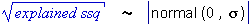

Distribution of estimated effects
It is often difficult to be certain which high-order interactions can be assumed to be zero in order to test the remaining main effects and interactions. The distribution of the estimated effects provides a guideline for which effects are important.
If none of the main effects or interactions are important, their estimated effects will all have normal distributions with mean zero and the same standard deviation. Since the signs of the effects are not important for this exercise, we conventionally examine the absolute values of the effects which should have a half-normal distribution.
A probability plot of these absolute effects is a scatterplot of the ordered effects against the quantiles of the half-normal distribution. If no effects are important, the points should be close to a straight line.
Ideally, most points will be close to a straight line, with a few larger effects, suggesting that only these larger effects are important.
Root explained sums of squares
The absolute values of the treatment effects are proportional to the square roots of the explained sums of squares in the analysis of variance table. The half-normal probability plot can therefore be produced equivalently from them,

Pilot plant filtration
A chemical product is produced in a pressure vessel. A factorial experiment was carried out in the pilot plant to study the factors thought to influence the filtration rate of this product. The four factors used in the experiment were Stirring rate, Formaldehyde concentration, Pressure and Temperature. A single replicate was conducted in random order with the filtration rate (gallons per hour) as the response measurement.
A half-normal probability plot of the square roots of the explained sums of squares is shown above. A straight line could be drawn through all effects except for three main effects (Stirring rate, Formaldehyde and Temperature) and two 2-factor interactions. This provides evidence that only these five effects are important.
Combining all but these five effects to form a residual sum of squares would underestimate the error variance, but the plot supports using the 4-factor and 3-factor interactions as a residual sum of squares for tests.
Click the checkboxes to remove the 4-factor and 3-factor interactions from the model. The yellow bands on the half-normal probability plot show the significance of the main effects and 2-factor interactions — light yellow for p-values less than 5% and darker yellow for p-values less than 1%.
Sugar reduction study
The diagram below shows the corresponding half-normal probability plot for the salt reduction data.
The information about which effects are important is much less clear. However it can be seen that the 3- and 4-factor interactions are all relatively small so it again seems reasonable to combine them to form a residual sum of squares for testing the other terms.
It is fairly common practice to assume that 3-factor and higher order interactions are negligible unless their estimated effects seem particularly high.